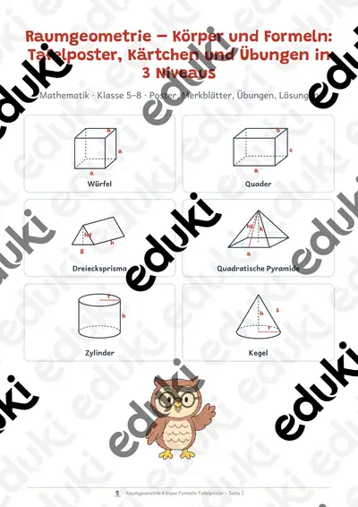

Quali Mathematik 9 Probeprüfung Teil A und B mit Lösungen, Mittelschule Bayern
Diese Probeprüfung bereitet Schülerinnen und Schüler der 9. Klasse gezielt auf den Quali im Fach Mathematik vor. Sie ist im Aufbau der Prüfung gestaltet: Teil A ohne Taschenrechner und ohne Formelsammlung, Teil B mit Taschenrechner und Formelsammlung. So üben die Jugendlichen Zeiteinteilung, saubere Rechenwege und Antwortsätze unter realistischen Bedingungen.SOFORT EINSETZBAR: Datei herunterladen, ausdrucken, Zeit stoppen und loslegen. Aufgaben mit Rechenkästchen, Musterlösungen und Auswertungsseite sind bereits enthalten. Es ist keine Vorbereitung nötig.WICHTIG: Alle Seiten sind in Farbe UND in Schwarz-Weiß enthalten. Du wählst einfach die Version, die zu deinem Drucker passt.DAS IST ENTHALTEN:Deckblatt mit Titel und Überblick- Seite So geht's mit Bearbeitungszeiten und Hinweisen- Merkseite mit den wichtigsten Formeln und typischen Fehlern- Teil A ohne Taschenrechner: 8 Aufgaben, 26 Punkte, 30 Minuten- Teil B mit Taschenrechner und Formelsammlung: 8 Aufgaben, 30 Punkte, 60 Minuten- Musterlösungen mit Rechenweg und Hinweisen zu typischen Fehlern- Auswertungsseite mit Selbstcheck, insgesamt 56 PunkteINHALTLICHER SCHWERPUNKT: Prozent und Zins (Prozentwerte, Preiserhöhung und Preissenkung, Zinsen für Monate, Zinseszins), Terme und Gleichungen (Klammern, Gleichungen aufstellen und lösen, Probe), Geometrie (Flächen, Umfang, Satz des Pythagoras, Zylinder, zusammengesetzter Körper), Funktionen (lineare Funktion, Wertetabelle, Tarifvergleich) sowie Daten und Wahrscheinlichkeit (Mittelwert, Median, Spannweite, Baumdiagramm).ABGEDECKTE KOMPETENZEN: Die Aufgaben steigen in jedem Teil von Bereich I (Wissen und Grundrechnen) über Bereich II (Zusammenhänge und Anwenden) bis Bereich III (Begründen, Verknüpfen und Bewerten). Es gibt Ankreuzaufgaben, Kurzantworten, Tabellen, Fehlersuche mit Begründung und Sachaufgaben. Die Lernenden trainieren Rechnen, Darstellen, Argumentieren und das Bewerten von Ergebnissen.EINSATZ: Als Probeprüfung im Unterricht, als Hausaufgabe, in der Förderung, im Vertretungsunterricht oder zur selbstständigen Vorbereitung zu Hause. Mit der Auswertungsseite erkennen die Jugendlichen selbst, welche Themen sie noch üben müssen.
Hinweis: Übungsaufgaben im Format der Prüfung (nachgebildet), frei erfunden und keine Originalaufgaben.
Hinweis zu Bildern: Skizzen eigene Darstellung, Maskottchen mit KI-Werkzeugen gestaltet.
Ähnliche Materialien

Klassenarbeitstrainer Mathematik Klasse 9 – Quadratische Funktionen und Pythagoras

ESA Mathematik Klasse 9: Probeprüfung mit Alltagsaufgaben, Teil A und B, mit Lösungen

Zinsrechnung Mindmap + 4 Arbeitsblätter mit Lösungen + Lernvideo (QR) – Zinsen, Zinssatz, Kapital & Monatszinsen

Geometrische Körper - Steckbrief Prisma - Mathe - Geometrie - Differenziert

Geometrische Körper - Steckbrief Kegel - Mathe - Geometrie - Differenziert

Geometrische Körper - Steckbrief Pyramide - Mathe - Geometrie - Differenziert

Raumgeometrie – Körper und Formeln: Tafelposter, Kärtchen und Übungen in 3 Niveaus